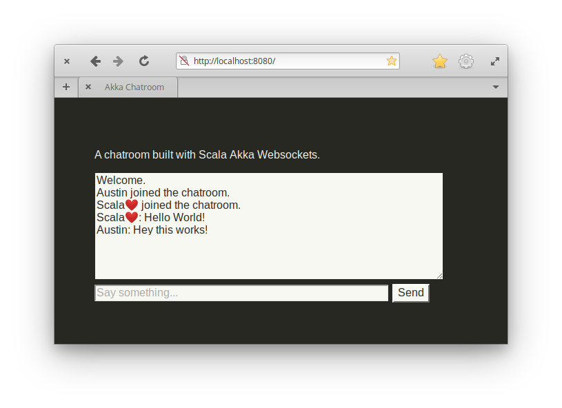

Websockets With Akka Http
( 8 min read )
This past weekend I wanted to play around with WebSockets and learn how to setup a server and client using them. Then I though, why not try writing a server in Akka Http? Its a great opportunity for me to learn more about Akka streams, as well as a common protocol for push/pull applications on the web, like a chatroom. In fact, that’s what I’ll do. I’ll build a chatroom app.
Swimming Upstream
First, I tried looking at the official docs for Akka Http websocket support. And well, I was a bit overwhelmed.
Source? Flow? Stream? Sink? What now? I started thinking I should stop here and just try to learn these new concepts before trying to build an app with them. But I’m kinda stubborn and want to get coding right away, so I push forward with a simple http endpoint to accept a websocket connection:
// build.sbt
libraryDependencies ++= Seq(
"com.typesafe.akka" %% "akka-http" % "10.1.8",
"com.typesafe.akka" %% "akka-stream" % "2.5.19"
)// ChatServer.scala
object ChatServer {
implicit val system = ActorSystem("app")
implicit val materializer = ActorMaterializer()
implicit val executionContext = system.dispatcher
def main(args: Array[String]): Unit = {
val apiRoute: Route =
path( "api" / "chat") {
get {
handleWebSocketMessages(/* do something with Flow[Message]*/)
}
}
Http().bindAndHandle(apiRoute, "localhost", 8080)
.map { _ =>
println(s"Server is running at http://localhost:8080/")
}
}
}Now I need to handle the Flow part of the websocket method. If a user calls GET wss://localhost:8080/api/chat with the right WebSocket header values, then
their connection is upgraded and connected to the server. Which can be done in JavaScript with this handy method, new WebSocket("wss://localhost:8080/api/chat").
The Flow is basically connecting a Source stream to a Sink for processing messages this way. Source is kinda like a producer/publisher of messages, while Sink is a consumer/subscriber. Or something to that degree, I could be butchering the explanation here so please checkout the offical akka docs for a better understanding of Akka streams.
So back to the Flow method. I knew I needed something able to process and respond to messages.
def websocketFlow: Flow[Message, Message, Any] =
Flow[Message].map {
case TextMessage.Strict(s) => TextMessage.Strict("Ok got the message.")
case BinaryMessage.Strict(b) => TextMessage.Strict("What?")
}The above example is pretty bare. So I setup a Source and Sink separately, then paired them together in the end to a Flow.
def websocketFlow: Flow[Message, Message, Any] = {
val (actorRef: ActorRef, publisher: Publisher[TextMessage.Strict]) =
Source.actorRef[String](16, OverflowStrategy.fail)
.map(msg =>
// outgoing message to ws
TextMessage.Strict(msg)
)
.toMat(Sink.asPublisher(false))(Keep.both).run()
val sink: Sink[Message, Any] = Flow[Message]
.map {
case TextMessage.Strict(msg) =>
// incoming message from ws
println(s"Received: $msg")
}
.to(Sink.ignore)
// pair sink and source
Flow.fromSinkAndSource(sink, Source.fromPublisher(publisher))
}Now its a bit more clear where messages are coming in and going out on the websocket.
Adding Actors
But I need the Flow processing to talk to other threads (read actors) for other users, and relay them messages too. So far, all I have is a server talking to a single client. I needed a ChatRoom class. It would keep track of all the other connected users, and act as one big pipe. I was fairly certain I could use Akka actors for this portion of the code. Actors are kinda like Runnable threads but with a cleaner API and are massively scalable, somwehere around 2.7 million actors per GB of RAM. Which sounds like overkill for a chatroom, but the clean API is what I’m after here. Thus, I could build a ChatRoom actor (server thread) would hold references to all the websocket Flow actors (or simply user threads) and broadcast messages to them.
I did find a blog post that covers how to build a chatroom in akka streams, however I found the version of akka they used was quite dated, so I had trouble implementing it on the latest akka 2.5 version. But the blog post did cover what I wanted in regards to the actors model, so all was not lost. Now I just needed to modify it to my setup.
class ChatRoom() {
private val roomActor = system.actorOf(Props(classOf[ChatRoomActor]))
def websocketFlow: Flow[Message, Message, Any] = {
val (actorRef: ActorRef, publisher: Publisher[TextMessage.Strict]) =
Source.actorRef[String](16, OverflowStrategy.fail)
.map(msg =>
// outgoing message to ws
TextMessage.Strict(msg)
)
.toMat(Sink.asPublisher(false))(Keep.both).run()
val sink: Sink[Message, Any] = Flow[Message]
.map {
case TextMessage.Strict(msg) =>
// incoming message from ws
roomActor ! UserSaid(name, msg) // send to room thread
}
.to(Sink.ignore)
// pair sink and source
Flow.fromSinkAndSource(sink, Source.fromPublisher(publisher))
}
}
class ChatRoomActor() extends Actor {
val users: Map[String, ActorRef] = Map.empty[String, ActorRef]
override def receive: Receive = {
case UserSaid(name, msg) =>
println(s"$name: $msg")
broadcast(s"$name: $msg")
}
def broadcast(msg: String): Unit = {
// send message to other users
users.values.foreach(_ ! msg)
}
}So now when a messages is sent to the server, it relays it to a ChatRoom that holds actor references to all the other users. There is even a broadcast method to send out messages to other users too. But I needed to add/remove users as they join and drop the chatroom. So I needed another tweak.
In the Flow, announce who joins, and who leaves.
// announce the user has joined
roomActor ! UserJoined(name, actorRef)
// ...
Sink.onComplete( _ =>
// announce the user has left
roomActor ! UserLeft(name)
)And respond to these types of messages within the actors.
override def receive: Receive = {
case UserJoined(name, actorRef) =>
users.put(name, actorRef)
println(s"$name joined the chatroom.")
broadcast(s"$name joined the chatroom.")
case UserLeft(name) =>
users.remove(name)
println(s"$name left the chatroom.")
broadcast(s"$name left the chatroom.")
case UserSaid(name, msg) =>
println(s"$name: $msg")
broadcast(s"$name: $msg")
}Awesome. So that does it for server-side websockets with Akka Http!
Testing it out with Firefox devtools, you can open the console and type something like this to connect.
$ var ws = new WebSocket("wss://localhost:8080/api/chat?name=Austin")
// Austin joined the chatroom.
$ ws.send("hello world!")
// Austin: hello world!
$ ws.close()
// Austin left the chatroom.You can even try out multiple users, by opening multiple tabs at once and giving them different names.
Icing on the Cake
To really make this demo come together, I built a minimal UI for it too. I added some JavaScript to help with opening the chatroom on page load. So now, when visiting localhost:8080 in the web browser, you see this.

Chatroom app complete!
I’m happy with how it turned out. And I learned a bit more about Akka, and WebSockets, along the way. It was a fun weekend project to try several new things at once!
If you’d like to run this yourself or browse the code, its over here on my GitHub.
Published: Jul 17, 2019
Category: code